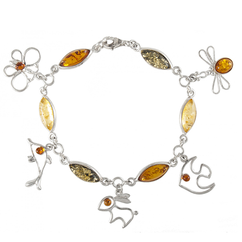
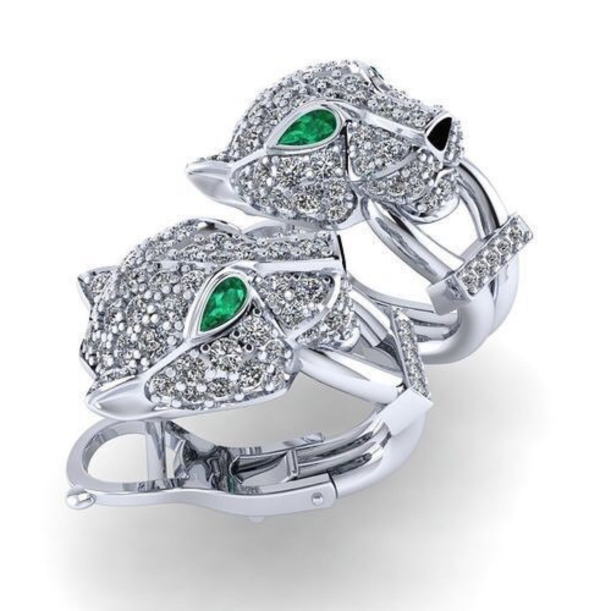
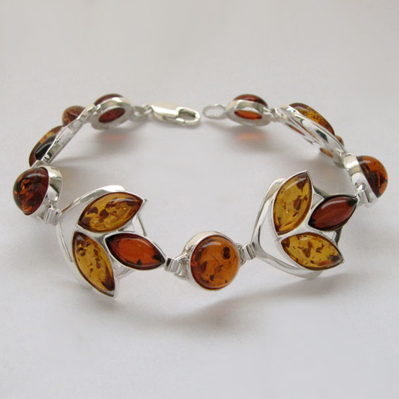
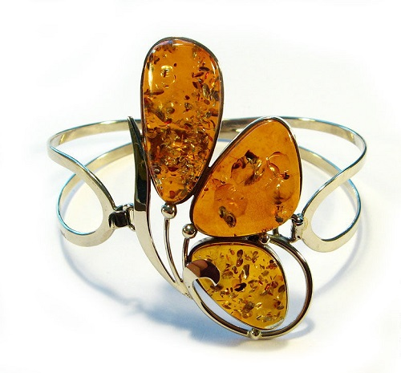

|
Silver
Uniqueness, originality, attractiveness – these are the main criteria that guide women when choosing accessories. And if you value these qualities in jewelry, you should pay attention to the works made of silver. Silver, like gold, occurs in nature in the form of nuggets and has good malleability. Thanks to these properties, it has played an important role in the cultural, economic and even religious life of society since ancient times. It is a material that is extremely in demand in jewelry. Anything can be made from it – from tiny but durable fasteners and connecting links, to massive fantasy medallions and solid bracelets. Works made of this material not only look gorgeous, but are also quite affordable – and this is important if you want to change your image often, vary the rings, necklaces, bracelets and brooches you wear. To assemble sets of headsets or combine them each time in a new way is up to you to choose |
  | |
|
Amber
The mistress's love with this pebble says sunny, lifts the mood. The mineral has residents of various affluence and social status. Only y, and not getting unique with a frog or a lizard inside. The amber decoration is decorated by Gilles, suitable for everyone, making the hozev healthier physically and morally. Amber is electrified by friction, is combustible and softens at 180 ° C. The stone lends itself well to processing, so it is actively used in jewelry. At the same time, it is a rather fragile material. Natural amber is light, therefore justifies the hollowed-out somewhat functional: aesthetics, kissing, constructive. On the invisible decorated types of rings or rings, the braid is used. |
  |
The list of materials used is just being updated.
We carry out work in almost all materials, so when discussing your product, you can focus not only on what is listed above, you can also choose your ideas on the use of precious stones and metals, and our master will tell you how it will look better and what will last longer.